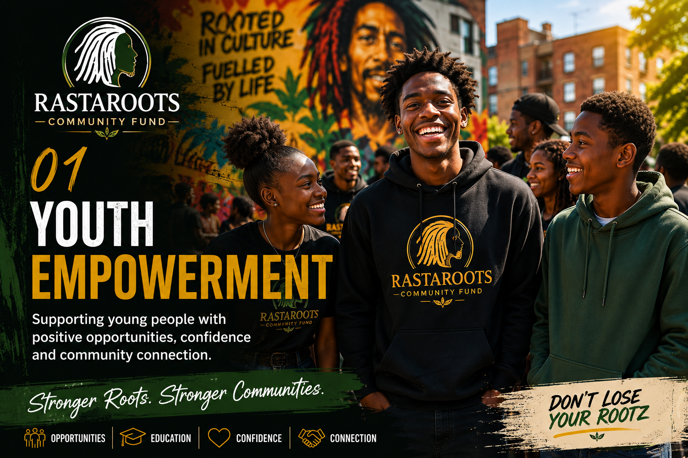
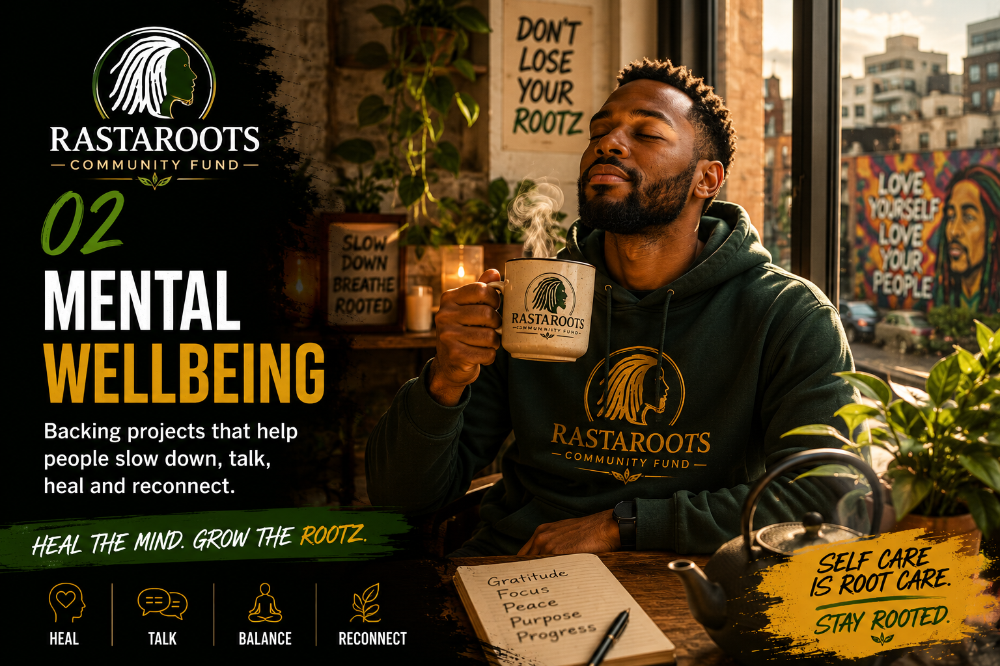
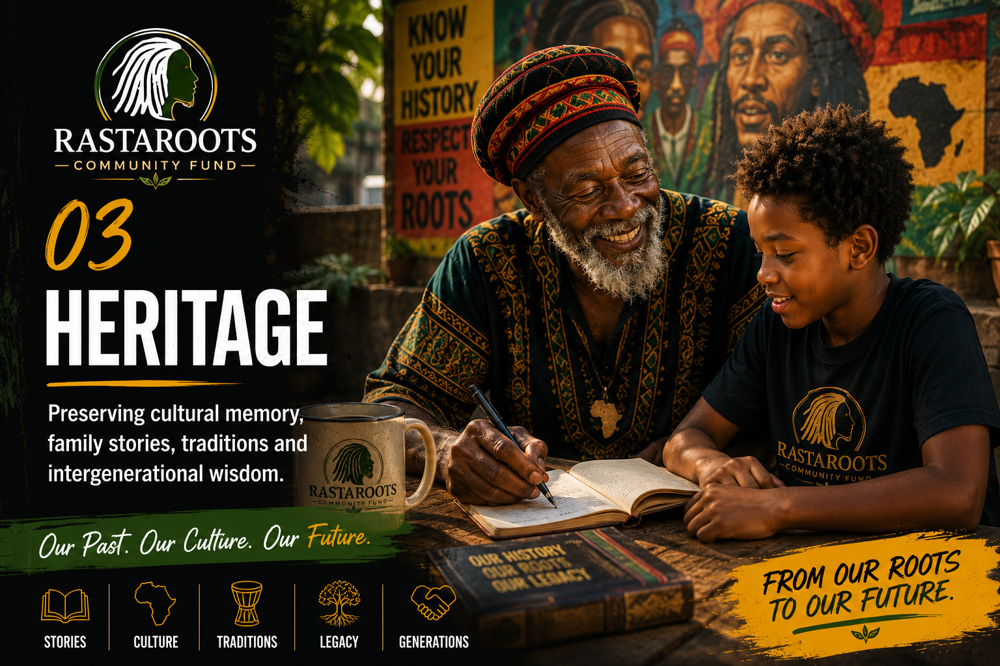
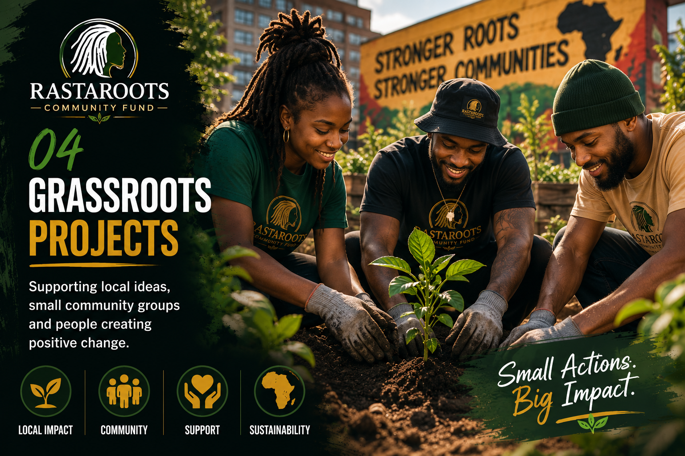
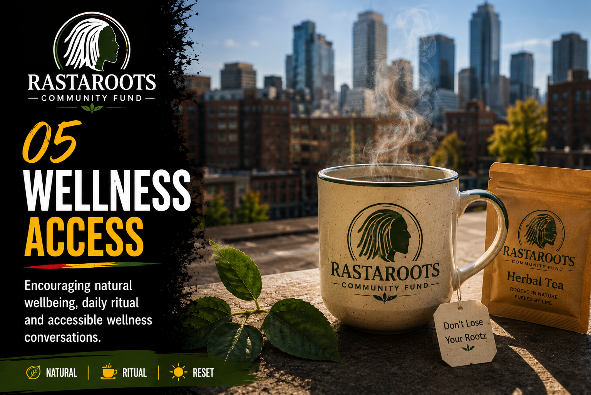
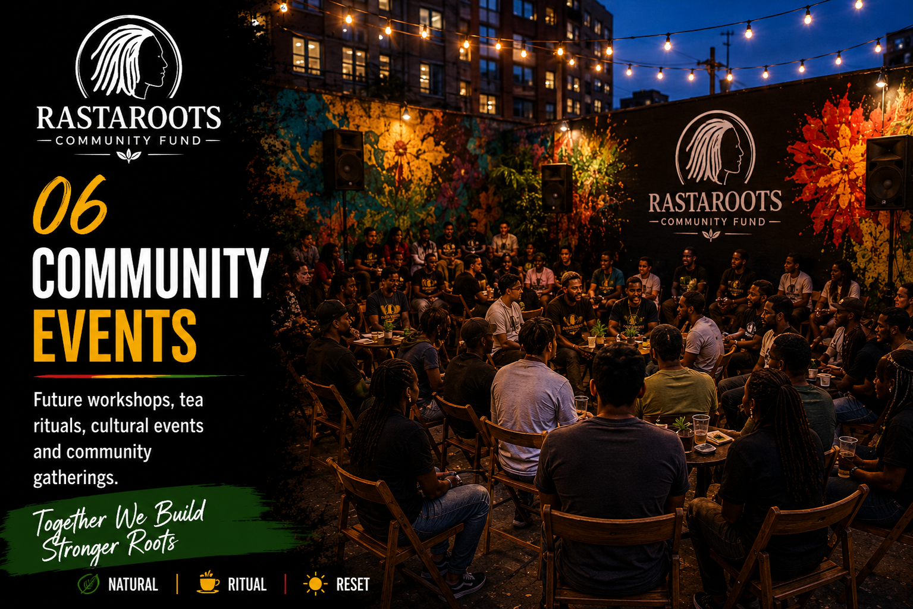

Rootz Community Fund • Purpose Before Profit
Stronger roots.
Stronger communities.
RastaRoots Life is being built as more than a herbal tea brand. The Rootz Community Fund is our long-term commitment to youth, wellbeing, heritage and grassroots community impact.

Built for more than product sales.
Early customers help shape the mission.
Focused on real people and local impact.
A fund designed to grow with the brand.

The Mission
Every sip can help grow stronger roots.
The Rootz Community Fund is our commitment to using the growth of RastaRoots Life to support real people, real communities and real cultural impact.
As the brand grows, we aim to contribute towards projects that strengthen families, support young people, protect heritage and improve mental wellbeing.
Explore The First Drop →What We Aim To Support
Six pillars for stronger communities.
The giving model will develop as RastaRoots grows, but the long-term impact will be built around these six areas.
Youth Empowerment
Supporting young people with positive opportunities, confidence and community connection.

02Mental Wellbeing
Backing projects that help people slow down, talk, heal and reconnect.

03Heritage
Preserving cultural memory, family stories, traditions and intergenerational wisdom.

04Grassroots Projects
Supporting local ideas, small community groups and people creating positive change.

05Wellness Access
Encouraging natural wellbeing, daily ritual and accessible wellness conversations.

06Community Events
Future workshops, tea rituals, cultural events and community gatherings.
Transparency
Built openly from day one.
At launch, the Community Fund begins as a commitment. As the brand grows, we will develop it into a more structured programme with clear updates, supported projects and visible progress.
Founder customers will be part of the journey from the beginning, helping shape both the product and the purpose behind it.
Founder Customers
You help build the beginning.
Every Founder Pre-Order helps RastaRoots move from vision to reality. Early customers are supporting the first production run, the tea ritual experience and the foundation of the wider community mission.
Pre-Order The First DropOur Promise
No fake reviews. Just real intention.
We are pre-launch, so instead of pretending we have customer reviews, we are telling you exactly what we stand for.
Premium Ingredients
Created around natural herbal blends, daily ritual and a premium discovery experience.
Purpose Before Profit
Built with a long-term commitment to community impact, not just product sales.
Founder Updates
Founder customers will be part of the journey as the first drop comes to life.
Secure Checkout
Checkout is completed securely through Shopify when you are ready to pre-order.
Long-Term Vision
From tea ritual to community movement.
The goal is not only to sell tea. The goal is to build a premium lifestyle brand that can support culture, wellbeing and community projects at scale.
Culture
Protecting stories, roots, memory and identity through content and community work.
Wellbeing
Helping people slow down, talk, reset and reconnect through ritual.
Action
Backing local ideas and people creating positive change from the ground up.
Stay Connected
Follow the journey.
Join the Rootz List for Community Fund updates, launch news, founder updates and future opportunities.